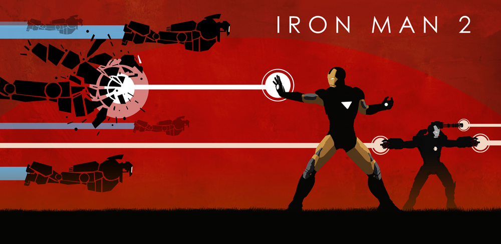

Iron Man 2 es una película de superhéroes basada en el superhéroe de Marvel Comics del mismo nombre. Se trata de la secuela de Iron Man, la tercera entrega del Universo Cinematográfico de Marvel, de la Saga del Infinito y de la Fase Uno. Se estrenó el 7 de mayo de 2010 en Estados Unidos. La película fue dirigida por Jon Favreau, y fue protagonizada por Robert Downey, Jr. como Anthony Stark / Iron Man, Gwyneth Paltrow como Virginia Potts, Don Cheadle, quien reemplazó a Terrence Howard como James Rhodes / Máquina de Guerra, Scarlett Johansson como Natalia Romanoff / Black Widow, Mickey Rourke como Ivan Vanko / Whiplash, y Samuel L. Jackson como Nicholas Fury. La tercera película de la serie, Iron Man 3, se estrenó el 3 de mayo de 2013 en Estados Unidos.
Iron Man 2
SINOPSIS
Ahora que el mundo es consciente de que él es Iron Man, el inventor multimillonario Anthony Stark enfrenta la presión en todos lados para compartir su tecnología con los militares. Él se resiste a divulgar los secretos de su traje blindado, temiendo que la información caiga en las manos equivocadas. Con Virginia Potts y James Rhodes de su lado, Anthony debe forjar nuevas alianzas y enfrentarse a un nuevo enemigo.
REPARTO
- Robert Downey, Jr. como Anthony Stark / Iron Man
- Davin Ransom como Joven Anthony Stark
- Gwyneth Paltrow como Virginia Potts
- Don Cheadle como James Rhodes / Máquina de Guerra
- Scarlett Johansson como Natalia Romanoff / Black Widow
- Sam Rockwell como Justin Hammer
- Mickey Rourke como Ivan Vanko / Whiplash
- Samuel L. Jackson como Nicholas Fury
- Clark Gregg como Phillip Coulson
- John Slattery como Howard Stark
- Garry Shandling como el Senador Stern
- Paul Bettany como J.A.R.V.I.S. (voz)
- Kate Mara como una Alguacil de Estados Unidos
- Leslie Bibb como Christine Everhart
- Jon Favreau como Harold Hogan
- Christiane Amanpour como Ella misma
- Philippe Bergeron como Detective Lemieux
- Larry Ellison como Él mismo
- DJ AM como Él mismo
- Tim Guinee como Mayor Allen
- Eric L. Haney como General Meade
- Ali Khan como Agente de los Diez Anillos
- Eugene Lazarev como Anton Vanko
- Helena Mattsson como Rebecca
- Anya Monzikova como Rebeca
- Margy Moore como Bambi Arbogast
- Olivia Munn como Chess Roberts
- Elon Musk como Él mismo
- Bill O'Reilly como Él mismo
- Jack White como Jack
- Stan Lee como Informante de los Vigilantes
- Max Favreau como Joven Peter Parker
MULTIMEDIA
